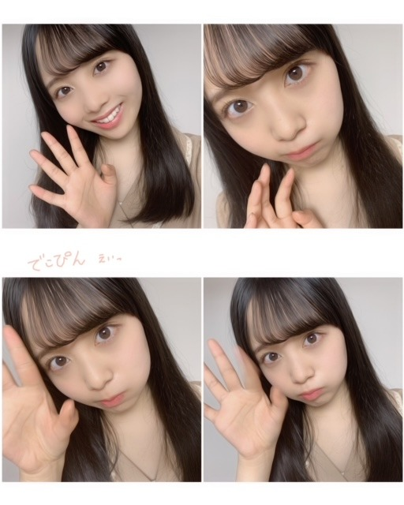
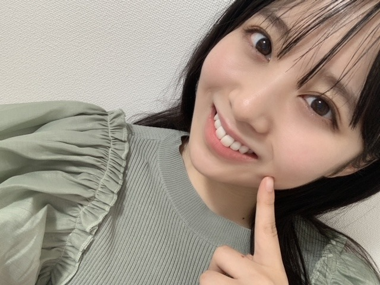
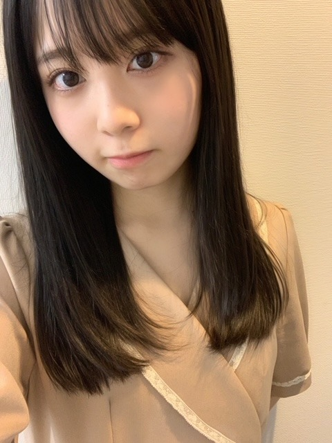

2020/1025Sun秋のワンピースで歩きたい10月。佐藤璃果
外は雲ひとつない晴れ
太陽の温かさ眩しさが
沢山詰まった青空が見えて、清々しい。
大切な思い出、いっぱいの夢、
詰まった毎日が宝物だと忘れぬように。
今日も、素敵な日になる事を願ってます。
こんにちは~
乃木坂46 （新）4期生 岩手県出身
佐藤璃果です。
冒頭の言葉の中に
今日の花言葉を含んでみました。
❁
こちら少し前にもブログで書いたお優しい先輩から頂いた服のシリーズ❁
実は久保史緒里さんから頂いたんです。
どれも可愛くて可愛くて
大事な仕事の時などに来ています！
半袖なので来年も沢山着ようと思います( ¨̮ )
ありがとうございます。
嬉しすぎます。。

急にでこぴんをし始めて沢山撮った写真
中田花奈さん、10月25日、
ご卒業おめでとうございます。
生のアイドルが好きで、中田さんとお話しできた事、本当に本当に嬉しかったです。
はじめての中田さんとの
お仕事がリモートという事で
色々大変な所もあったのに、うまく進めて下さって、まとめて下さって、楽しい時間にして下さった事ずっと忘れません。
テレビを見ている時に目を引く
中田さんのパフォーマンス中の
ダンスでの表現、表情、
醸し出す雰囲気まで本当に素敵で好きです。
素敵な先輩と少しでも同じ時間を過ごせた事、これからも大切にしていきます。
何故かは分かりませんが、今、
とても中田花奈さん！！
と叫びたい気持ちです。それぐらい中田さんへの感謝の気持ちが沢山なんです。
ご卒業おめでとうございます。
これからも素敵な人生である事を願っております。
~~~質問~~~
〇冬にやりたいこととかありますか？
お鍋を食べたいです( ˙༥˙ )
〇最近、秋になったことで街でさつま芋を見かけることもより多くなったと思うけど、毎日さつま芋は摂取してますか？？
はい！︎︎︎︎︎☺︎
今朝も焼き芋食べました~♡
〇最近バイト始めたんですが、まだまだ慣れなくてミスばっかりなんです、、、りかちゃんはバイトしたことありますか？応援してください〜
バイトした事ありますよ！！
私もミスしました。。
ミスしない人なんて居ないので、
大丈夫です。きっと。
これからです！！
いつもお疲れ様です！( ¨̮ )
〇璃果ちゃんは今になって高校の時のなんの時間が好きやったなぁーとか思うことある？？？
みんなが仲良さそうに平和に話してるのを
見ているときです︎︎︎︎︎☺︎
〇辛いの得意なの？？
大好きです~！！☀︎
〇璃果ちゃんの大事な思い出は何ですか？
毎日が大事な思い出になっていっています、
新しい出会いだったり経験だったり、
沢山あって限定できないなぁ
〇寒さには強い方ですか〜？
つ、強い気がする、、
ヒートテックは欠かせませんが。
〇最近寒くなってきたけどこの時期欠かさずやることとかってあるの？
もこもこ靴下を履いたり、、
白湯は年中無休なのですが、この季節は特に飲むと温まっていいですよね！
〇最後の写真が可愛すぎて、うっっってなりました。
持ってるのはマカロンのクッション？
〇最後のお写真のクッション！SR審査の時に見たような！違うかな？
うっっっっ！！
そうですマカロンですᙏ̤̫♡
多分大当たりです！
素晴らしい記憶力と、素晴らしい奇跡。
ありがとうございます。
〇雪にまつわる思い出はありますか？
幼少期は、
たくさん雪遊びしたよ~☃︎
〇気温はどのくらいまで下がるんですか？
氷点下が続く日が必ず毎年ありました(>_<)
〇ぶりっ子してるお写真ください(⸝⸝o̴̶̷᷄ ·̭ o̴̶̷̥᷅⸝⸝)❤︎
うっっっっ！
有難いリクエストありがとうございます。
いつか、、。
〇僕の晩御飯を決めてください。必ず食べます！
たまごりょうり
最近は家でもレンジでゆで卵しています。
〇璃果ちゃんは口癖とかありますか??
大丈夫かなー？？大丈夫？
〇冬はエアコン派？ゆかだんぼう派？
・冬はコタツ派？暖房派？
地元ではこたつ。
今現在はエアコンです！
〇岩手の雪ってふわふわしてるのー？？
していました！
雪に飛び込んだりしていました~❅*॰ॱ
毎回質問が多くて楽しいです。
番組についての感想もとても嬉しいです。
いつもありがとうございます！( ˙º˙ )

やっぱり冬はもこもこ~。
ぱっちりまつ毛
~~~~~~~~~~~~~~~~~~~
明日はるなぴです。
なんだか色んなバトンが飛んでいますね
瑠奈ちゃん・美佑ちゃんからの
"クリスタルプリンセスロッド"
奈於ちゃんからの"竹筒" バトン、
じゃあ私はお芋チップスバトンにしようかな

~~~~~~~~~~~~~~~~~~
寒くなってきたけど、皆さんお元気かな？
乾燥してるから沢山保湿します、、。
皆さんも乾燥にはお気をつけくださいね。
それでは
皆さんにとって
素敵な1日になりますように。

またね。
#37 りか

PROFILE
新4期生リレー
202104
| SUN | MON | TUE | WED | THU | FRI | SAT |
|---|---|---|---|---|---|---|
| 1 | 2 | 3 | ||||
| 4 | 5 | 6 | 7 | 8 | 9 | 10 |
| 11 | 12 | 13 | 14 | 15 | 16 | 17 |
| 18 | 19 | 20 | 21 | 22 | 23 | 24 |
| 25 | 26 | 27 | 28 | 29 | 30 | |

コメント(282)
最近ほんとに寒くなってきたよね。
実は僕、今日あまり本調子ではなくて少し風邪気味ぽいです。
璃果ちゃんも体調管理には気をつけてね。
ノギザカスキッツ明日すごくたのしみです。
告知でさぁちゃんとかっきーが泣いていたのでなにか発表があったのかなぁ。
いい報告だといいなぁ
質問コーナーお願いします
Q最近ハマってる飲物とかありますか？
Qハロウィンが近づいてきたけど何かしますか？
Qホチキス、ホッチキス、どっち派ですか？
良かったらお答えお願いします！
またコメントするね！またね！
裸足でななよだ(きょうすけ)
ブログ更新ありがとうございます
今日ファミリーマートに行ったら焼き芋(温かいやつ)が売られていました！コンビニで焼き芋が買えるのいいですね！寒い日は、おでんやホットスナックなどを買いがちなのでレジ横に焼き芋があったらついつい買ってしまいます笑
「おはつちゃん」への出演おめでとうございます！観ますね
最近聞く曲って何ですか？
ショートにする予定あるの？？
YOSHIKI
最近は寒くなったけど、体調には気をつけて頑張って！！
そして、ちょっと早いけど次々回の更新日の11/4は僕の誕生日。偶然にしてもとても嬉しいです。楽しみにしているよ。
ー質問ー
・写真集を発売するならどこで撮影したい？
・至福のひとときは何している時？
・気晴らしではよく何をする？
ありがとう！次回も楽しみにしているよ。
でこぴんやられました笑笑可愛すぎっす
久保ちゃんから服貰ったとか最高じゃん！
先輩との絡みも増えてきたんだねー！
良かったらその話もいっぱいしてほしいな？？？
璃果ちゃんいっぱい質問答えてくれるから考えて送るの楽しい！笑笑
5日後のブログも楽しみに待ってますー！
ミーグリ今やってるけど、こういう形でお話するのも楽しいなって思いますね。新4期はまだ参加してないけど、早めに新4期の皆も参加してのミーグリやりたいですね〜りかちゃんと話すことたくさんあります笑
東北の話とかできたらいいな〜
次の更新も楽しみにしてます！
半袖だからちょっと寒そうだけど、他のものと合わせたらもっと可愛くなりそう！
YOSHIKI
花言葉って毎日違うやつがあるから一年に一回しか出会えないってことでは一期一会なのかなって今思いました笑
璃果ちゃんのブログを読み始めてからどーやって花言葉って決められたんやろーって思い始めて今後調べて行こかなっ思ってます！
次のノギザカスキッツで最終回なのかな？悲しいんよねぇ。毎週の楽しみやから無くなるのは辛いけど、他の番組でさらばさんと関われるようになって欲しいな！って応援してます！
そういえばもう水曜日に白石さんの卒コンがあるけど、璃果ちゃんはこの曲はいつまでも歌い続けて欲しい！って思う曲とかありますか？？
んじゃもう11月が近づいてきてるけど、こっからまた頑張っていこー
久保ちゃんにもらった服似合ってる！！
今日も自撮りめっちゃめっちゃ可愛いよ！！
毎日毎日寒くて大変だね…！！
質問〇11月は七五三があるね！璃果ちゃんは千歳飴好き？？
〇璃果ちゃん！ハロウィン前日の感想を聞かせてください！！
まいやんの卒業ライブが近づいてきたけど璃果ちゃんらしくまいやんを送り出してね！！自分は画面に向かって声援とパワーを送ります。
璃果ちゃんが体調を崩さないように健康にいられますように！！
まいやんのライブ応援してる！一瞬一瞬見逃さないようにするね！！
ゴードンでした！
りっちゃん！
やっほー！
ひろき(Yandji)です☺️
ブログ更新ありがとー！！！
質問タイムー！！！
自分を動物に例えると何だと思う？
また、コメントするね！
では、またねー！
ひろき(Yandji)より
最初の言葉どこが花言葉なんだろう。探してみよっかな。
いいこと書くね璃果ちゃんって。ポエマーとかなれそう笑
久保ちゃんからのお洋服似合ってるよ！
乃木坂はスタイルとか身長とか割とみんな近いからお洋服あげたり貰ったりできるしいいね。
男ってあんまりそうゆうことしないから笑
おデコ出しかわいい〜
ぱっちりまつ毛羨ましいな。僕下がりまつ毛やからビューラーで上げなあかんねん。
僕も最近は乾燥してるからリップとか塗ったりいろいろしてますよ。
寒くなってきたから風邪ひかないようにしようね。
璃果ちゃんにとっても素敵な1日になりますように。
またブログ更新楽しみにしてます！
(=ﾟωﾟ)ﾉﾎﾅ､ﾏﾀ!!
人思いなところ良いところだけど、人に心配かけたくないって言う思いから、1人で抱え込んじゃう人とかいるから、
抱え込みすぎないで周りの人を頼って大丈夫だからね！
俺も人の心配しちゃう人なの笑
無理しないでがんばってね！
YOSHIKI
おー、しおりから貰った服だ
いや、めちゃ似合うじゃん？(｡>﹏<｡)
でこぴん、えい！可愛い(*´ω｀*)♡
今後また花奈と会えるならば良いよね(;_;)
質問返し
・りかちゃんは何のバイトをした？
・辛い得意って、やんちゃんのおはつちゃんを見た？(*´ω｀*)
・もこもこ靴下履いてるりかちゃんを見たいよ(*´ω｀*)
・ぶりっ子写真楽しみ＼(^o^)／（笑）
フード被ってるりかちゃん可愛い(｡>﹏<｡)
いやー、本当に赤ちゃんの顔だな(｡>﹏<｡)♡
いやー、バトンを増やさないで(｡>﹏<｡)
3本目のバトンは口に挟むかな？（笑）
これからも頑張って(/･ω･)/
りかちゃんも体調気をつけて
りかちゃんに質問!乃木坂46の中の推しメンは誰ですか?
質問返しほんとにありがとう（ ; ; ）
ほんとに寒くなってきてびっくりだよね、
風邪ひかないようにね！！
質問です！
◎富山県には来た事ありますか??
◎璃果ちゃんは雪国出身なのでスキーとかは得意なんですか??
◎最近衝撃を受けた出来事ありますか??
◎璃果ちゃんのぬいぐるみとかクッションのコレクションを見たいです！！
いつも幸せありがとう！だいすき！！
まなより
早く璃果ちゃんに握手会で会いたいな‼️
璃果ちゃんは小学生の時どんな子でした?
自分は小学生の時は冬でも半袖半ズボンで遊んでました
名前隠してはいたけど、やっぱり久保ちゃんだったんだね(笑)
前、久保ちゃんのshowroomでりかちゃんとのお話聞いて、きっと仲良くなってるんだろうなぁって思ってました(笑)
ほんとに仲良くなってるのが伝わってきて、俺もなんか嬉しいよ！(笑)良かった〜！
最近ほんとに寒くなってきたよね…。冬に向けて色々対策して今年も乗り切りましょう…！
冬は女の子が可愛くなりやすい季節だと俺は思うので、マフラーとかモコモコのやつとか、そういう感じのりかちゃんいっぱい見れるの楽しみにしてるねw
28日、いよいよまいやんの卒コンだけど、りかちゃんもきっと出るだろうし、色んな思いがあるだろうけど、ほんとに頑張ってね！
初舞台の新4期生も、最後の舞台のまいやんも、全て目に焼き付けられるように俺もしっかり見ようと思います。
ほんとに頑張ってね！！！！
質問
・家にこたつはありましたか〜？(東北だと出れなくなりそう)
・りかちゃんが今アイドルなんだなぁって感じる瞬間はありますか？
・これから仲良くなりたい！って思ってるメンバーはいますか？
・きのこの山派ですか？たけのこの里派ですか？(笑)
5日後をまた楽しみに待ってるね！
メリアより。
まさに秋晴れ、気持ちのいい日でした。
かなちゃんへの祝福かな。
先輩からもらう服、それぞれ個性があっ
ていいですね。髪型をしおりちゃんぽく
したのか、とてもお似合いです。
そう、バイトでもなんでも、経験してる
と気持ちが強くなれますね。誰でもミス
はするってことを覚えられて、人に優し
くもなれる。
ミスパーカーＪｒ可愛い子Ｖｅｒ.
今回のブログも楽しく、そして温かく優しい内容で寒くなってきたけど、ほっこりできました。
写真も沢山載せてくれて、目の保養になりました！
ほんとに日に日に、りかちゃんに会いたい気持ちが増しています！
もうすぐ、まいやんの卒コンですね。
寂しいけど、応援して送り出したいですね。
りかちゃんは、まいやんとの思い出ってありますか？
次のブログも楽しみにしてますね！
久しぶりのコメントになってしまいました、ごめんね
受験が終わってあと1週間後に合格発表が控えてます
受かってるといいなあ〜〜
次のブログ更新も楽しみにしてるね♪
久保ちゃんからもらったのいいな〜〜
可愛い❤️可愛い
卒業も寂しいけど、みんなで力合わせて頑張ろう
まいやんのYouTube見てたら今までたくさん衣装とかあったなー、みたいになって感動しました、
すっごい急だけど好きなポケモンいますか？笑
前髪なしでもかわいいねー(T_T)(T_T)(T_T)
しーちゃんからもらった服もかわいい！
5日後の更新楽しみにしてるね⸜( •ᴗ• )⸝またね！だいすき！
東京の秋めっちゃ暖かいと思いません？？
今の時期岩手だったら厚手の服着ないと厳しいですよねw
ありがとうございます！
質問
寒い秋に食べたい物は何ですか？
ちなみに僕は鍋です家族皆んなで囲ってあったかい食べ物食べるのが好きですw
今日の写真えぐいてぇぇぇ笑
来週からも頑張れそうです！
まいやんの卒コン応援してるから頑張ってね！
最近ジャンプで連載している灰みえる少年おすすめなので見てみてください！！！
たーくんです。
素敵な花言葉ありがとう。少しずつ季節が変わって、眩しい夏が過ぎ去ってちょっと寂しい気もするけど、季節は過ぎ去るからこそ思い出が美しくなるんだよね。
璃果ちゃんとの思い出、これからたくさん作りたいな。
写真たくさんありがとうね。
璃果ちゃんは本当にお肌がツルツルのツヤツヤで綺麗です！！スキンケアとか教えてほしいな笑（男だけど。）
しーちゃんとの関係すきだよ笑
オーディションの時から知ってるんだよね。
2人とも可愛いからお互い会った時の「うわ、この子可愛い。」ってなる瞬間を客観的に見てみたい人生でした笑
明日からお仕事忙しいんだけど、璃果ちゃんのブログで元気出たので頑張ります。
いつもありがとう。
たーくん
ーーー質問ーーー
たまご料理何が好き？いつかのためにりかちゃんの好きな料理練習しておきます！( •̀ •́ゞ)ﾋﾞｼｯ!!
りかちゃんは何オタクですか？
東北の冬と東京の冬の寒さは違うと久保ちゃんが言ってたような。。体調に気をつけてね。
久保ちゃんの服も着こなしてるよ。秋色だね。
質問
飛行機、電車、船、車、旅行するなら、どの交通機関で旅したい？
久保ちゃんもらった服かわいいね！
今回はすいません。コメント短めになりました。
また、ブログ更新まで待ってるね！
じゃあ、またじゃん！笑笑
あら、かわいいお洋服。
よかったですね☺️
花奈さん卒業されますね。
花奈さんの人生がこれからもいいものでありますように…！
今日も質問にたくさん答えてくれて有難うー！
おかゆ
今日もすごく可愛いです
質問 岩手の秋って同じ東北でもやっぱり福島県とは違いますかね？福島県は（少なくとも僕が住んでるとこは）朝霧がすごいんです。でも昼には暖かくなります。岩手はどうですか？教えてください♪
今日の花言葉の花はもみじですか？
璃果ちゃんの影響で花言葉に
興味を持つようになった気がします。
久保ちゃん優しいですね！
フードかぶってる写真が別人みたいで
驚きました！
雰囲気が変わってるのもすごく
美しいです。
次回のノギザカスキッツも
楽しみにしています。
またね。
今日の写真も可愛い〜〜( ◜ω◝ )
前髪なしも好きだな〜〜！！
私は璃果ちゃんのパーツで言うと特にぱっちりおめめとさらっさらしてそうな髪の毛が好き！憧れる！！！
そういえばふと思ったけど璃果ちゃんって髪の毛短かったことあるのかな？？？
もしあったら写真も見てみたいな〜〜！！！
ということで今日はこれを質問ってことにするね！
答えてくれたら嬉しいな、、、！！
じゃあ今回はこのへんでまたね〜〜 みみみ٭❀*より
コメントする